컴퓨터활용능력-2급 (2011-03-20 기출문제)
1과목: 컴퓨터 일반
1. 다음 중 산술 논리 연산 장치(Arithmetic and Logic Unit)의 구성 요소가 아닌 것은?
- 상태 레지스터
- 누산기
- 프로그램 카운터
- 보수기
(정답률: 50%)

2. 다음 중 개인용 컴퓨터(PC)에서 문자를 표현하기 위해 일반적으로 사용하는 코드 형식에 해당하는 것은?
- ASCII 코드
- BCD코드
- ISO 코드
- EBCDIC 코드
(정답률: 76%)
3. 다음 중 한글 Windows XP에서 휴지통에 저장되지 않는 경우로 옳은 것은?
- <Shift>를 누른 상태에서 삭제한 파일
- <Ctrl>을 누른 상태에서 삭제한 파일
- <Alt>를 누른 상태에서 삭제한 파일
- 바로가기 메뉴에서 [삭제] 메뉴를 눌러서 삭제한 바로가기 아이콘
(정답률: 58%)
4. 다음 중 한글 Windows XP에서 [디스크 정리]에 관한 설명으로 옳은 것은?
- 불필요한 파일들을 삭제하여 디스크의 여유 공간을 확보한다.
- 디스크에 분산되어 있는 저장 파일들을 연속된 공간에 저장하여 디스크 접근 속도를 향상시킨다.
- 디스크의 전체 크기와 사용 가능한 공간이 늘어난다.
- 디스크의 원본 데이터의 손실에 대비하여 외부 저장 장치에 저장한다.
(정답률: 68%)
5. 현재 IP주소의 고갈로 인하여 IPv4체계에서 IPv6체계로의 변경이 불가피해지고 있다. 다음 중 IPv6에서 사용하는 주소의 비트 수로 옳은 것은?
- 32비트
- 64비트
- 128비트
- 256비트
(정답률: 72%)
6. 다음 중 한글 Windows XP에서 사용 중인 프로그램을 닫거나 실행 중인 프로그램을 끝내기 위한 바로 가기 키는?
- <Ctrl> + <Tab> 키
- <Alt> + <Enter> 키
- <Alt> + <Tab> 키
- <Alt> + <F4> 키
(정답률: 68%)
7. 다음 중 한글 Windows XP의 프린터 설치에 대한 설명으로 옳지 않은 것은?
- 프린터 한 대를 공유하여 여러 대의 컴퓨터에서 사용할 수 있다.
- 기본 프린터에 스풀 기능이 설정되어 있을 경우 인쇄속도가 빨라진다.
- 이미 설치한 프린터라도 다른 이름으로 다시 설치할 수 있다.
- 프린터마다 개별적으로 이름을 붙여 설치할 수 있다.
(정답률: 63%)
8. 다음 중 한글 Windows XP에서 디스크에 대한 할당 및 보안 등과 같은 고급 기능을 사용하기 위해서는 어느 파일시스템을 사용해야 하는가?
- FAT16
- FAT32
- NTFS
- VFS
(정답률: 57%)
9. 다음은 무엇에 관한 설명인가?
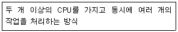
- 일괄처리 시스템(Batch Processing System)
- 다중처리 시스템(Multiprocessing System)
- 듀플렉스 시스템(Duplex System)
- 다중프로그래밍 시스템(Multiprogramming System)
(정답률: 72%)
10. 다음 중 전자우편(E-mail) 헤더의 구성에 속하지 않는 것은?
- 발신자 주소
- 숨은 참조인 주소
- 편지의 제목
- 전달
(정답률: 47%)
11. MPEG은 큰 용량의 동영상을 효율적으로 압축하기 위한 표준을 제정하고 있다. 다음의 MPEG에 관한 설명 중 옳지 않은 것은?
- MPEG1: 기존의 비디오테이프 수준의 화질을 제공하고 있으며 비디오 CD 제작에 사용된다.
- MPEG2: 높은 화질과 음질을 제공하고 있으며 DVD, HDTV 등에 사용된다.
- MPEG7: 동영상 데이터 검색과 전자상거래 등에 적합하도록 개발된 동영상 압축 재생기술이다.
- MPEG21: 인터넷이나 무선통신 등에 필요한 동화상과 음성의 고능률 부호화 방식으로 복합 멀티미디어 서비스의 통합 표준이다.
(정답률: 43%)
12. 다음 중 한글 Windows XP에서 [시스템 종료] 대화상자에 표시되는 선택 메뉴로 옳지 않은 것은?
- 끄기
- 대기 모드
- 사용자 전환
- 다시 시작
(정답률: 60%)
13. 다음 빈칸에 알맞은 것을 고르시오.
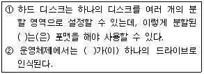
- Registry
- File System
- Zip Drive
- Partition
(정답률: 51%)
14. 다음 중 멀티미디어의 개념에 대한 설명으로 옳지 않은 것은?
- 멀티미디어는 정보 제공자의 선택에 의해 하나의 방향으로 데이터가 전달된다.
- 다양한 형태의 데이터를 디지털 데이터로 변환하여 통합 처리한다.
- 멀티미디어 데이터는 용량이 크기 때문에 압축하여 저장한다.
- 인터넷 기술의 발전으로 대용량 멀티미디어 데이터를 전세계의 모든 사람들이 쉽고, 빠르게 사용할 수 있다.
(정답률: 72%)
15. 다음 중 컴퓨터 바이러스나 웜(Worm)이 가지고 있는 특징으로 옳지 않은 것은?
- 복제 기능
- 치료 기능
- 은폐 기능
- 파괴 기능
(정답률: 78%)
16. 다음 중 인터넷 웹브라우저에 대한 설명으로 가장 적절하지 않은 것은?
- 자주 사용하는 사이트의 자료를 따로 저장하고 있다가 사용자가 다시 그 자료에 접근하려고 할 때 인터넷을 접속하지 않고 저장한 자료를 활용해서 빠르게 보여주는 기능을 쿠키라고 한다.
- 플러그 인 프로그램을 설치하여 동영상이나 소리 등의 다양한 멀티미디어 데이터를 처리할 수 있다.
- 웹 브라우저를 처음 실행시킨 후부터 종료 전까지 사용자가 방문했던 웹 사이트 주소들을 순서대로 기억하여 보존하는 기능을 히스토리라고 한다.
- 자주 방문하는 웹 사이트를 쉽게 찾아갈 수 있도록 해당 웹 사이트 주소를 목록형태로 저장해 둔 것을 즐겨찾기라고 한다.
(정답률: 48%)
17. 다음 중 통신 장비에 대한 설명으로 옳지 않은 것은?
- 게이트웨이(Gateway) : 네트워크에서 다른 네트워크로 들어가는 관문의 기능을 수행하는 지점을 말한다.
- 라우터(Router) : 서로 독립적으로 동작하면서 같은 프로토콜을 사용하는 두 LAN(Local Area Network)을 연결하는 네트워크 장치이다.
- 스위칭 허브(Switching Hub) : 여러 대의 컴퓨터를 연결하는 장치로, 더미 허브(Dummy Hub)와는 달리 노드가 늘어나도 속도에는 변화가 없다.
- 리피터(Repeater) : 디지털 방식의 통신선로에서 전송신호를 재생시키거나 출력전압을 높여 전송하는 장치이다.
(정답률: 56%)
18. 다음 중 압축에 대한 설명으로 옳지 않은 것은?
- 압축을 함으로써 디스크 공간을 효율적으로 사용할 수 있다.
- 압축을 함으로써 파일을 전송할 때 빠르게 처리할 수 있다.
- 여러 개의 파일을 하나의 파일로 압축할 수 있다.
- 'WAV'의 형태는 파일 압축을 사용한 대표적인 경우이다.
(정답률: 74%)
19. 다음 중 인터넷 익스플로러처럼 인터넷을 사용하기 위한 웹 브라우저가 아닌 것은?
- 모자이크(Mosaic)
- 오페라(Opera)
- 파이어폭스(Firefox)
- 안드로이드(Android)
(정답률: 59%)
20. 다음 중 프린터 제품별로 차이가 나는 특징적인 기능이나 성능을 나타내는 설명으로 가장 거리가 먼 것은?
- 양면 인쇄 기능
- 최대 해상도
- 인쇄 속도
- 프린터 스풀링 지원
(정답률: 45%)
2과목: 스프레드시트 일반
21. 다음 중 창 정렬과 창 나누기에 대한 설명으로 옳지 않은 것은?
- 창을 정렬하는 방식은 4가지가 있다.
- 창 정렬은 여러 개의 통합 문서를 배열하여 비교하면서 작업할 수 있는 기능이다.
- 창이 나누어진 상태에서는 분할선을 마우스로 끌어 분할된 지점을 변경할 수 있다.
- 창 나누기는 현재 셀 포인터의 우측과 위쪽을 기준으로 설정된다.
(정답률: 60%)
22. 다음 중 워크시트를 스크롤할 때 행과 열의 위쪽이나 왼쪽 부분이 항상 표시되도록 하는 기능으로 옳은 것은?
- 전체 화면
- 페이지 나누기 미리보기
- 틀 고정
- 화면 분할
(정답률: 72%)
23. 다음 중 차트 마법사의 2단계에서 설정할 수 있는 항목으로 옳지 않은 것은?(제외된 문제, 문제 출제당시 오피스 2003 기준으로 출제되어 현재는 제외된 문제 입니다. 참고만 하세요.)
- 데이터 범위
- 계열
- 계열 위치를 행/열 중에서 선택
- 차트의 제목
(정답률: 34%)
24. 다음 중 공유 통합 문서에 대한 설명으로 옳지 않은 것은?
- 여러 사용자가 동시에 동일한 셀을 변경하려하면 충돌이 발생한다.
- 공유된 통합 문서의 워크시트에서 전체 행이나 열은 삽입하거나 삭제할 수 있다.
- 워크시트나 차트시트를 삭제할 수 있다.
- 공유 통합 문서를 열면 창의 제목 표시줄에 [공유]가 표시된다.
(정답률: 41%)
25. 다음 중 매크로에 관한 설명으로 옳지 않은 것은?
- 서로 다른 매크로에 동일한 이름을 부여하면 안 된다.
- 매크로를 활용하면 자주 사용하는 복잡한 작업을 단순한 명령으로 실행할 수 있다.
- 사용자의 키보드 동작 및 마우스 동작을 그대로 기록할 수 있다.
- 매크로 기록 기능으로 기록한 매크로는 편집할 수 없다.
(정답률: 67%)
26. [셀 서식]-[맞춤]탭에서 아래의 내용에 적용된 셀 서식 지정 방식으로 옳지 않은 것은?
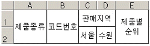
- 텍스트 줄 바꿈을 선택했다.
- 셀 병합을 선택했다.
- '텍스트 방향'을 '세로'로 선택했다.
- 텍스트 맞춤을 가로 '가운데', 세로 '가운데'로 선택했다.
(정답률: 65%)
27. 다음 시트에서 [H1]셀에 표시되는 결과로 옳은 것은?
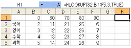
- 26
- 27
- 7
- 8
(정답률: 41%)
28. 다음 중 피벗 테이블에서 가능한 작업들을 설명한 것으로 옳지 않은 것은?
- 먼저 피벗 테이블을 만든 후 나중에 피벗 차트를 추가할 수 있다.
- 피벗 테이블과 피벗 차트를 함께 만든 후에 피벗 테이블을 삭제하면 피벗 차트도 자동으로 삭제된다.
- 피벗 차트는 피벗 테이블을 만들지 않고는 만들 수 없다.
- 한번 작성된 피벗 테이블의 필드 위치를 필요에 따라 삭제나 이동하여 재배치할 수 있다.
(정답률: 67%)
29. 다음 그림처럼 셀 값을 입력하기 위해서 [A1]셀에 숫자 1을 입력하고, [A1]셀에서 마우스로 채우기 핸들을 아래로 드래그하려고 한다. 이때 숫자가 증가하여 입력되도록 하기 위해 함께 눌러줘야 하는 키로 옳은 것은?
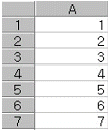
- <Alt>
- <Ctrl>
- <Shift>
- <Tab>
(정답률: 65%)
30. 다음 중 부분합에 대한 설명으로 옳지 않은 것은?
- 부분합의 첫 행에는 열 이름표가 있어야 하며, 그룹으로 사용할 데이터는 반드시 오름차순으로 정렬되어야 한다.
- 부분합이 실행되면 윤곽 기호가 표시되므로 각 수준의 데이터를 편리하게 볼 수 있다.
- 부분합이 적용된 각 그룹을 페이지로 분리할 수 있다.
- 부분합을 해제하고 원래의 목록으로 표시할 때는 [부분합] 대화 상자에서 [모두 제거] 단추를 클릭한다.
(정답률: 65%)
31. 다음 중 함수식의 실행 결과가 옳지 않은 것은?
- =MOD(17,-5) ⇒ 2
- =PRODUCT(7,2,2) ⇒ 28
- =INT(-5.2) ⇒ -6
- =ROUND(6.29,0) ⇒ 6
(정답률: 37%)
32. 다음 중 인수를 사용하지 않는 함수는?
- SUM
- NOW
- HLOOKUP
- MAX
(정답률: 66%)
33. 아래 시트에서 'o' 한 개당 20점으로 시험 점수를 계산하여 점수 필드에 표시하려고 할 때 [H2]셀에 들어갈 수식으로 옳은 것은?
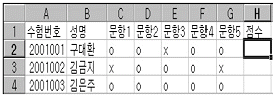
- =COUNT(C2:G2,"o")*20
- =COUNTIF(C2:G2,"o")*20
- =SUM(C2:G2,"o")*20
- =SUMIF(C2:G2,"o")*20
(정답률: 52%)
34. 다음 중 성명이 '정'으로 시작하거나 출신지역이 '서울'인 데이터를 추출하기 위한 고급 필터 조건으로 옳은 것은?
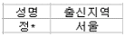
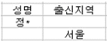
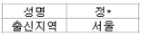
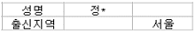
(정답률: 73%)
35. 다음 차트에 대한 설명으로 옳지 않은 것은?
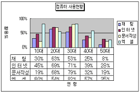
- X(항목), Y(값) 축이 표시되어 있다.
- Y(값) 축 주 눈금선이 표시되어 있다.
- 범례 표지 표시가 설정되어 있다.
- 데이터 테이블 표시가 설정되어 있다.
(정답률: 24%)
36. 다음 중 엑셀에서 작성 가능한 파일형식과 그에 대한 설명으로 옳지 않은 것은?
- XLK : 백업 파일
- XLT : 서식 파일
- HTM : 웹 페이지
- WK4 : 작업 영역 파일
(정답률: 42%)
37. 다음 원본 데이터와 이에 대한 차트의 설명으로 옳은 것은?
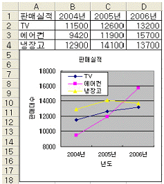
- 차트 제목인 '판매실적'은 [A1] 셀 데이터 값이 자동으로 설정된 것이다.
- 차트의 계열 위치 옵션을 '열'로 선택한 결과이다.
- Y축 눈금의 최소값인 8000은 [축 서식]-[눈금] 탭에서 수동으로 설정한 것이다.
- 차트 위치 옵션을 '새로운 시트로'를 선택한 결과이다.
(정답률: 46%)
38. 다음 중 매크로에 대한 설명으로 옳지 않은 것은?
- 매크로 이름에는 특수 문자(+,-,&,*,?)가 포함될 수 없으며 공백도 포함될 수 없다.
- 매크로의 바로 가기 키는 기본적으로<Alt>가 지정되어 있으며 새로운 알파벳 문자를 바로 가기 키로 지정할 수 있다.
- 매크로 대화상자의 설명은 매크로 실행과는 관계가 없는 주석을 기록하는 것으로 비주얼 베이직 편집기 창에서 보면 작은 따옴표(')로 시작한다.
- 절대 참조로 기록된 매크로를 실행하면, 현재 셀의 위치에 상관없이 매크로를 기록할 때 지정한 셀에 매크로가 적용된다.
(정답률: 54%)
39. 다음 채우기를 이용하여 데이터를 입력한 결과이다. 연속데이터 대화상자에서 방향은 '열', 유형은 '급수'일 때 단계 값으로 옳은 것은?
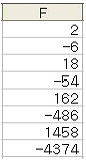
- 2
- -3
- 3
- -6
(정답률: 67%)
40. 다음 시트에서 [B10]셀에 [B3:D9] 영역의 평균을 계산하고 자리올림을 하여 천의 자리까지 표시하는 함수식으로 옳은 것은?
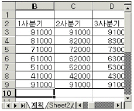
- =ROUNDUP(AVERAGE(B3:D9),-3)
- =ROUND(AVERAGE(B3:D9),-3)
- =ROUNDUP(AVERAGE(B3:D9),3)
- =ROUND(AVERAGE(B3:D9),3)
(정답률: 42%)